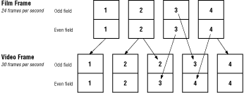
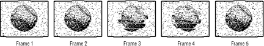
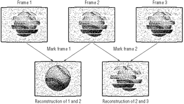

The 3-2 Pulldown tool
The 3-2 Pulldown tool removes composite frames from a QuickTime movie.
This increases the movie's perceived resolution, while reducing the
bandwidth required to display it on the 3DO Interactive Multiplayer.
Only movies that start as film and are converted to analog video need 3-2
Pulldown processing. If you're not sure whether a movie was originally
captured on video, follow the steps in "Identifying Composite Frames"
later in this chapter to check for the composite frames present in movies
converted from film to video.
Understanding Telecine
Composite frames are intermediate frames inserted into a movie during
Telecine conversion from film to video. This process converts film that
displays at 24 frames per second into video tape that displays at 30
frames per second. Each set of four film frames is converted into
interlaced video fields and then the video fields are reconstructed into
five video frames as shown in the figure below.
The third and fourth video frames in this figure are composite frames that
replace the second film frame. With these two composite frames included,
the movie can be displayed at the 30 fps rate required by most analog
video standards.
When analog video is converted into a QuickTime movie, however, these
composite frames are included. Since the human eye often does not
distinguish the difference between 24 fps and 30, you can remove the
composite frames from your movie and display it at 24 fps in your 3DO
application. This results in a clearer picture since the composite frames
are not true digitized versions of corresponding film frames.

Figure 1: The Telecine process inserts frames.
Choosing a movie
Currently, 3-2 Pulldown processes only QuickTime movies that meet the
following criteria:
- 30 frames per second
- raw format (no compression)
You can check the frame rate of a movie and find out whether it's been
compressed with a number of QuickTime tools. Apples's MovieAnalyzer tool
includes the frame rate and compression codec in the information window it
displays for each video track in a movie.
Note: 3-2 Pulldown requires raw source data. Make sure your
movie has not been compressed with JPEG before you process it with 3-2
Pulldown.
Field dominance
To process a QuickTime movie correctly, you need to determine its field
dominance. The field dominance setting determines whether a video capture
system (video tape deck, laser disk recorder, etc.) selects an even or odd
interlace field as the first field it uses when creating the first frame
of a movie. Below are the field dominance selections for two standard
video capture systems:
-----------------------------------------------------
System |Field Dominance
-----------------------------------------------------
Pioneer LaserRecorder|Even
-----------------------------------------------------
Sony Betacam |Odd
-----------------------------------------------------
Choose Preferences in the File menu to display the 3-2 Pulldown
preferences dialog. Select either Even or Odd, depending on the field
dominance of your movie. If you do not know what system was used to
capture it, choose Odd (the most common field dominance) and then check
for a field dominance error when saving the processed movie. See
"Incorrect Field Dominance" under "Troubleshooting" to learn how to check
for field dominance errors.
Removing composite frames
To process a movie:
- mark the composite frames
- check the frame markers
- save the movie
When you open 3-2 Pulldown, the standard File dialog appears. Select the
movie you want to process and click Open. The movie displays in a standard
movie player window. You can step forward or backward by clicking on the
frame-advance icons in the lower-right corner of the display or by using
the left and right arrow keys.
Identifying composite frames
As you step through the movie, two out of every five frames should be
composites. Since the composite frames are created from interlace fields
from two different film frames, you can identify them by the misalignment
or "aliasing" of the interlace fields. Below is an example of a sequence
of frames.

Figure 2: Composite frames show misaligned fields.
When you identify a pair of composite frames, mark the first one by
choosing Mark from the Frame menu. Doing this identifies the composite
frame as the first in a pair that will be converted into a reconstructed
frame by 3-2 Pulldown.
A status bar under the movie window shows the time, frame, and phase
numbers for the frame displayed. 3-2 Pulldown updates the status bar as
you step through the movie. The green rectangle in the status bar
represents a mark for that frame.
The phase counter represents the five-frame sequence of true and
composited frames that 3-2 Pulldown expects. If the sequence of composite
frames goes out of phase, return to the last correctly marked set of
composite frames and review the movie again until you can identify and
mark the next set of composite frames.
Identifying composite frame sequences in edited film
With film that has been edited after Telecine processing, there can be
three composite frames in sequence. This usually occurs when two sets of
composite frames are combined during editing of a video tape. Of the three
composite frames, two should form one reconstructed frame and one remains
as an "orphan" frame.

Figure 3: Correctly and incorrectly marked composite
frames.
The figure above shows the results of marking two different frames. In
this sequence frames 1 and 2 are the correct set of composite frames.
Marking frame 1 results in a true reconstructed frame. Marking frame 2
results in a reconstructed frame that remains aliased.
Marking a movie
It may take several passes through a movie to mark all the composite
frames correctly. Because edits may change the sequence of composite
frames, you cannot assume that marking the first set of composite frames
synchronizes the reconstruction process for the remainder of the movie. To
speed up the review process, use the tab key to step through the marked
frames.
Saving a processed movie
Choose Save as Pulldown from the File menu to save the movie. When 3-2
Pulldown saves, it displays the reconstructed frames as they are created.
Check each reconstructed frame for the interlace field aliasing that
indicates an incorrectly reconstructed frame. You may need to reset the
frame markers and save the movie again.
Uncompressed QuickTime movies take up large amounts of disk space.
Processing to remove composited frames requires enough disk space to store
both the unprocessed and processed versions of the movie. Removing
composited frames-that is, one out of every five-reduces the size of the
unprocessed movie by approximately 20 percent and cuts the required disk
space accordingly.
It is possible that a processed movie will contain fewer composited frames
if it's edited after Telecine processing, resulting in a final file size
greater than 80 percent of the number of pre-Telecine frames. The
processed movie will never be larger than the unprocessed movie,
however.
Troubleshooting
Some common problems that arise with video processing and their solutions are listed below.
Synchronizing audio
A processed movie should contain 80 percent of the number of frames as the
unprocessed movie. For example, a 900-frame movie should contain 720
frames after 3-2 Pulldown processing. If an unprocessed film contains more
than the normal number of composite frames as a result of post-Telecine
editing, the processed film may not contain the expected number of total
frames. This can put the movie's audio track out of sync with the video
track, and you may have to paste frames back into the video track to
restore video and audio synchronization.
Incorrect field dominance
If you've chosen the wrong field dominance, the reconstructed frames
created by 3-2 Pulldown will not be correctly interlaced. Instead of the
interlace fields matching correctly, they will be aliased to a greater
degree than they were in the corresponding composite frames. To remedy
this, change the field dominance in the Preferences dialog and save the
movie again.